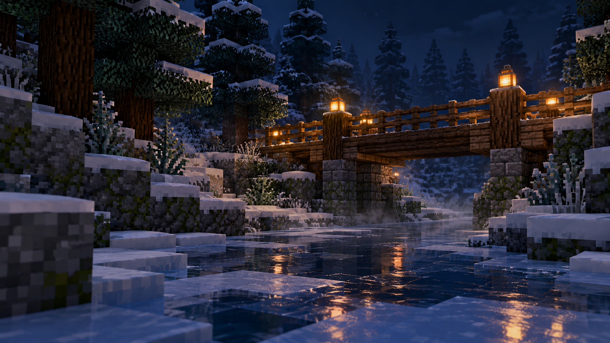

01
HUD под тебя
Расположение и оформление игровых элементов — в твоих руках.
МИР, В КОТОРЫЙ ХОЧЕТСЯ ВЕРНУТЬСЯ
Larp собирает любимые моменты Minecraft в одну атмосферу. Заходи в игру — остальное уже на месте.
Тихий снег за окном, тёплый свет в меню и мир, который ты собираешь под себя. Larp создан для тех, кому важны ощущения от каждого входа в игру.
Что есть в клиенте
Larp Visual — пространство для собственного образа: косметика, выразительные детали и HUD, который подстраивается под настроение.
Информация о цене и покупке появится здесь после запуска продаж.
Меняй то, что видишь каждый день. Оставь на экране только свой ритм.
Расположение и оформление игровых элементов — в твоих руках.
Подбирай косметику и собирай образ прямо в клиенте.
Свет, движения и акценты, которые оживляют привычную игру.
СЛЕДУЮЩИЙ ВЕЧЕР НАЧИНАЕТСЯ ЗДЕСЬ
Один лаунчер, знакомый мир и детали, которые делают его твоим.
Скачать Larp для WindowsVisual задуман как отдельная коллекция оформления для Larp. Состав и условия получения будут указаны перед открытием продаж.
Да. В клиенте есть настройки интерфейса и примерочная для косметики.
Мы добавим цену и способ покупки, когда они будут утверждены.